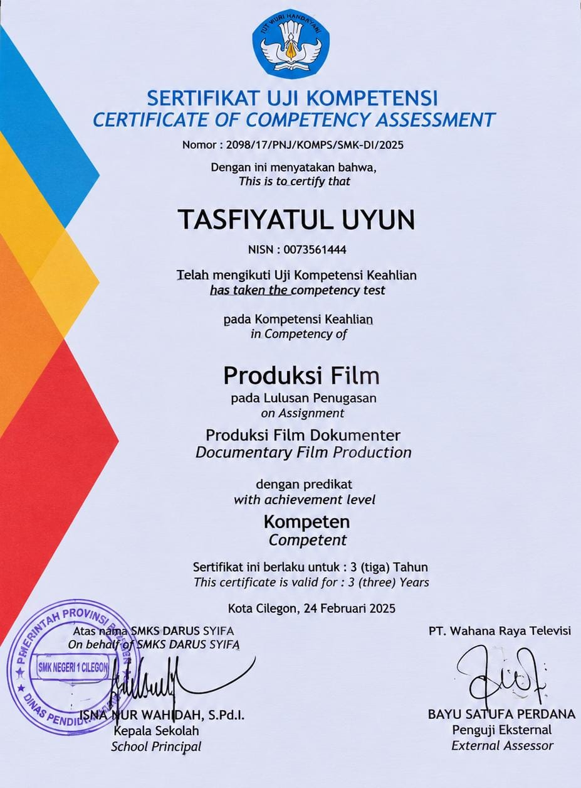

MY EXPERIENCE
PENGALAMAN SAYA
PRAKTIK KERJA LAPANGAN
Pengalaman PKL Saat Sekolah
Tempat: BAPPEDA LITBANG Kota Cilegon
Periode: 19 Februari 2024 - 17 Mei 2024
Posisi: Bagian Persuratan dan Kesekretariatan (Magang)
Deskripsi Pengalaman
Selama melaksanakan Praktik Kerja Lapangan (PKL), saya ditempatkan di bagian Persuratan dan Kesekretariatan. Pada bagian ini, saya mendapatkan pengalaman secara langsung dalam proses pengelolaan surat dan dokumen di lingkungan perkantoran.
Tugas dan Tanggung Jawab
Adapun tugas dan tanggung jawab yang saya lakukan selama kegiatan magang meliputi:
- Menerima dan mencatat surat masuk yang diterima oleh kantor.
- Melakukan registrasi dan pencatatan surat keluar.
- Mendistribusikan surat kepada bidang atau bagian yang dituju.
- Mengelola dan menyusun arsip surat agar tersimpan dengan rapi.
- Melakukan input data surat ke dalam pencatatan administrasi.
- Membantu memastikan surat dan dokumen tersampaikan kepada pihak terkait.
Pengalaman dan Keterampilan
Melalui kegiatan magang ini, saya memperoleh pemahaman mengenai alur pengelolaan surat masuk dan surat keluar, proses pendistribusian dokumen, serta pengarsipan berkas. Pengalaman ini juga membantu saya meningkatkan ketelitian, kedisiplinan, tanggung jawab, kemampuan mengoperasikan komputer, dan komunikasi dalam lingkungan kerja.
MY LEARNING EXPERIENCE
Hal yang Saya Pelajari
Pengelolaan Surat
Memahami proses penerimaan, pencatatan, registrasi, dan pengelolaan surat masuk maupun surat keluar.
Pengarsipan Dokumen
Mempelajari cara menyusun, menyimpan, dan mengelompokkan arsip surat agar mudah ditemukan kembali.
Input dan Pengolahan Data
Belajar melakukan input data surat, mencatat informasi dokumen, serta memastikan data tersusun dengan rapi.
Distribusi Surat
Memahami proses penyaluran dan pendistribusian surat kepada bidang atau bagian yang dituju.
Kedisiplinan dan Tanggung Jawab
Belajar menyelesaikan pekerjaan dengan tepat waktu, teliti, disiplin, dan penuh tanggung jawab.
Komunikasi dan Kerja Sama
Mengembangkan kemampuan berkomunikasi dan bekerja sama dengan pegawai serta berbagai bidang di lingkungan kantor.
UJI KOMPETENSI
Uji Kompetensi (UKOM) Banten TV
Selain pengalaman Praktik Kerja Lapangan, saya juga pernah mengikuti Uji Kompetensi (UKOM) saat menempuh pendidikan di SMK Darus Syifa jurusan Broadcasting. Kegiatan ini diuji oleh Banten TV sebagai bagian dari pengujian kompetensi keahlian.
Pengalaman yang Diperoleh
Melalui kegiatan Uji Kompetensi ini, saya mendapatkan pengalaman dalam mengikuti proses penilaian kompetensi sesuai bidang Broadcasting serta kesempatan untuk mengembangkan kemampuan dan pengetahuan yang telah dipelajari selama sekolah.
MY CERTIFICATES
Sertifikat Saya
Sertifikat Praktik Kerja Lapangan
Sertifikat sebagai bukti telah melaksanakan kegiatan Praktik Kerja Lapangan di BAPPEDA LITBANG Kota Cilegon.

Sertifikat Uji Kompetensi Banten TV
Sertifikat sebagai bukti telah mengikuti Uji Kompetensi bidang Broadcasting yang diuji oleh Banten TV.
